**Homework 1 - Getting Started**
Student Name: Zehang Qiu
Legi Number: 22-739-809
(Note: please read the [supplementary](#supplementary) section first before working on this report.)
# Part 1: Normal Integrator
**Time spent on this task:**
20-30 min
**Describe your implementation of Normal Integrator.**
For this part, there is nothing particularly unique about what I have implemented. I simply followed
the guidance provided in the Preliminaries section.
**Shading Normal Comparison: Ajax**
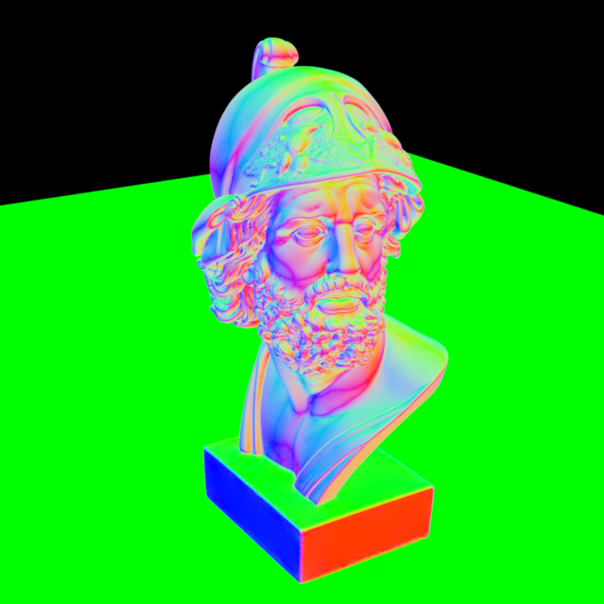
# Part 2: Average Visibility Integrator
**Time spent on this task:**
30-40min
**Describe your implementation of Average Visibility Integrator.**
The implementation of this section is primarily related to "av.cpp". Initially, I constructed
the main structure of the "AverageVisibility" class using the example from the "Preliminaries"
section. Upon a careful comparison with "normals.cpp", it becomes clear that the parts requiring
modification are where the intersection occurs.
I learned from the "sampleUniformHemisphere" function that it returns a random vector on the unit
hemisphere. Since the vector has a length of 1, the resulting vector can be considered a normalized
direction vector.
Upon observing the constructor of "Ray3f", the starting point is the intersection point, and the "maxt"
parameter represents the maximum length of the ray, essentially the length of the light ray. Initially,
I set "mint" to 0.0f, but I noticed that in this scenario, planes in the Ajax scene appeared black.
After consulting issue #11, I found that I needed to introduce a slight offset to the ray, denoted as
"Epsilon." In this case, the scene appears as expected, but I'm not entirely certain whether my
understanding is correct.
**Average Visibility Comparison: Ajax**
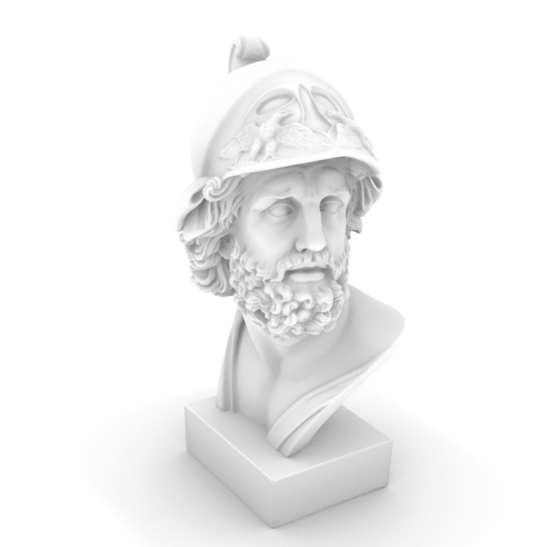
**Average Visibility Comparison: Sponza**
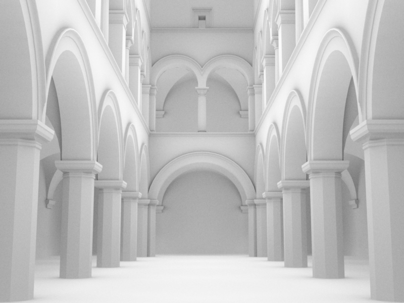
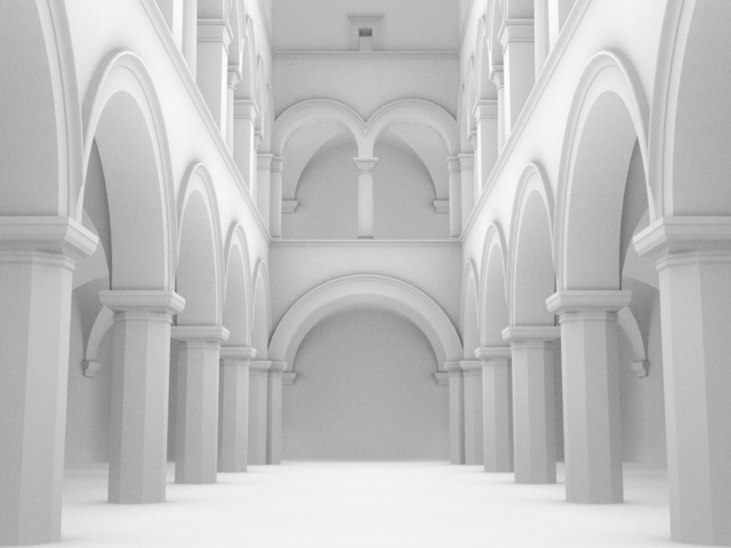
# Part 3: Analytic Sphere Shape
**Time spent on this task:**
$\approx$ 1hour(30min for function 1 and $\approx$ 35 for function 2, mostly spent on uv)
**Describe your implementation of Sphere and two functions.**
The implementation of this section primarily concerns the "rayIntersect" and
"setHitInformation" functions in "sphere.cpp."
First, let's talk about the "rayIntersect" function, which is used to determine
if there's an intersection between a ray and a sphere. This function is
implemented based on the guidance provided in "04-raytracing.pdf#P43-46."
Additional consideration is needed for the final "t" value because we seek to
find the smallest real positive root. Consequently, I initially check the
"$(c-o)\cdot d - \sqrt{r^2-D^2}$" value of "t" to see if it falls within the
specified range. If it doesn't, then I check the "$(c-o)\cdot d + \sqrt{r^2-D^2}$"
value. If neither falls within the range, there's no intersection within the
specified "t" range.
As for the "setHitInformation" function, we must fill in the relevant parts of
"its" as per the requirements. Here, I drew inspiration from the content in
"mesh.cpp" regarding filling in "its." Since "(its.p - m_position).normalized()"
is used multiple times, I extracted it as a normal. According to the information
provided in "issue#14," the geometric normal is the normal tangent to a surface
at the point where a ray intersects it, and the geometric frame is the
infinitesimally small part of this surface. For the analytic sphere case,
the smoothness of this frame suffices for rendering, allowing the rendering
frame to be set equal to the geometric frame.
Regarding the calculation of "uv" coordinates, initially, I directly used the
"sphericalCoordinates" function (although it took some time to locate this function).
However, later, while working on the final part related to texture mapping,
I noticed that the generated sphere texture was incorrect. I attempted to find
an explanation in the lecture notes, but I couldn't find it; perhaps I overlooked something.
Yet, I discovered a method on https://en.wikipedia.org/wiki/UV_mapping#Finding_UV_on_a_sphere
to convert geometric coordinates to parametric coordinates. After comparing it with the
function in "common.h," I divided both "u" and "v" by $2\pi$ and $\pi$, respectively,
to obtain the final results. However, when generating the sphere texture, I found
that this produced a texture that was the opposite of the reference black and white
squares. I then tried adding another 0.5 to both "u" and "v," as shown on the Wikipedia page,
resulting in an offset of the textures. Only when I added 0.5 to "u" after division and left
"v" divided by $\pi$ alone did I obtain the correct results.
**Sphere Analytic vs Mesh Comparison**
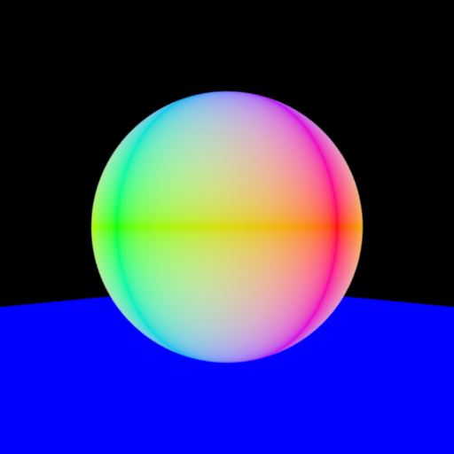
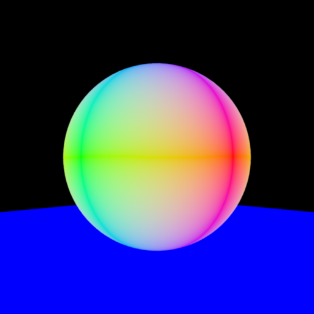
# Part 4: Direct Illumination Integrator
**Time spent on this task:**
3-4 hour(1 hour in pointlight and 2-3 hour in direct)
**Describe your implementation of Direct Illumination Integrator.**
The approach to implementing the "pointlight" is at first quite similar to the previous example.
After constructing the "PointLight" class, I received an error message indicating that "the pure
virtual functions nori::Emitter::sample, nori::Emitter::eval, and nori::Emitter::pdf had no
overrides." Looking at "emitter.h", I realized that the main property we could to use is "lRec.ref".
From "issue#24," it became clear that our main task is to fill in the other fields of "lRec."
In constructing the "PointLight," I mainly referred to the construction method of "Sample_Li" from
https://github.com/mmp/pbrt-v3/blob/master/src/lights/point.cpp. Initially, I used the
construction method for the shadowRay from "Sample_Le", but later, upon revisiting the content in
the PBRT book, I realized that in the "directlight" context, only the construction related to "Li"
is used. Therefore, the "shadowRay" should be regarded as a ray originating from the intersection
point and pointing towards the light source, used to determine if there's any occlusion between
the point and the light source.
From "emitter.h", I learned that "sample" should return the values of "eval" and "pdf". In the
reference "point.cpp" mentioned above, "sample" returns "I / DistanceSquared(pLight, ref.p)",
but in our implementation, there is no "I". I managed to extract "I" and complete the return part
by using "power = 4 * Pi * I." It felt somewhat like following the template to do all the other
step, but not to understand fully why each step goes, so I may need to review the relevant PBRT
content to deepen my understanding.
For "direct.cpp," I constructed it following the example of the previous Integrator. I had a
general idea of the direction of implementation, what checks need to be performed, and what
steps to take. However, certain specific functions took me quite a long time to search and
try, especially those related to BRDF.
The overall approach is to first check whether the view
ray intersects with objects. If there is an intersection, then I go through all light sources,
construct the object and light's sample functions. I obtain the radiance provided by the light
source and use the constructed shadow ray to determine whether the light source is occluded.
The final color should be the light source's radiance multiplied by the BSDF and the cosine term.
I then acquire the values of the BSDF and the cosine term. Getting the BSDF value involves
backtracking from "getBSDF" to "bRec" step by step. There are many results obtained through
trial and error, and I might need further learning on the specific approach to obtaining the BSDF.
Calculating the cosine term came to me as quite clever when I realized that the dot product of
the "normal" and "wi" vectors is the cosine result, especially when both are unit vectors.
**Direct Illumination Comparison: Sponza**
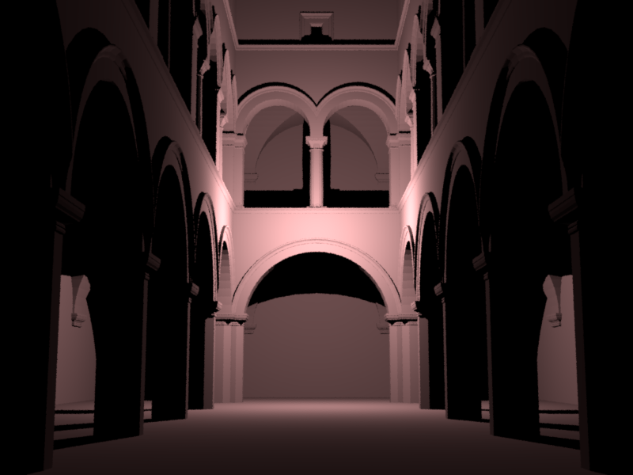
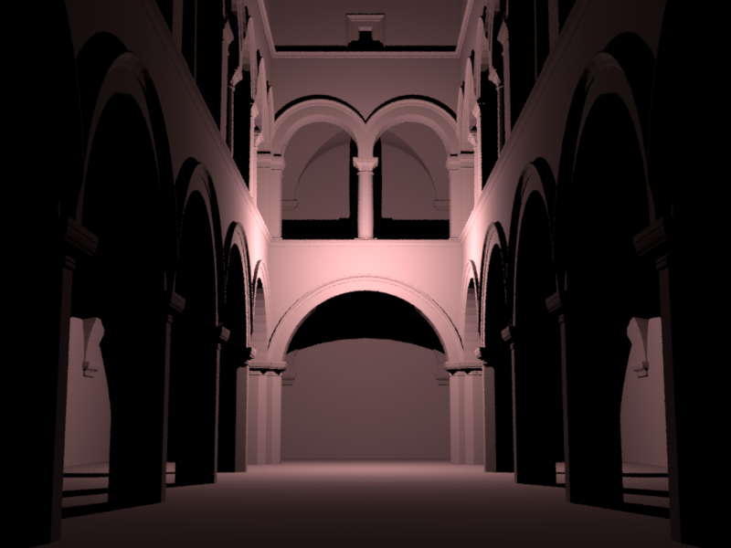
# Part 5: Texture Mapping
**Time spent on this task:**
30min
**Describe your implementation of texture mapping.**
The implementation of this function primarily revolves around understanding the
checkerboard texture. Consider the following checkerboard texture: for every point
within (0,0) to (2,2), its color is the same as the color of the top-left vertex of
the square it belongs to. In this case, the top-left vertices with corresponding
black color are (0,0) and (1,1), while the white color corresponds to (1,0) and (0,1).
It can be observed that their characteristic lies in the fact that the sum of the UV
coordinates of the top-left vertex of a black square is even, while for a white square,
it's odd. It's evident that regardless of swapping the positions of black and white
squares or increasing the number of black and white squares, this pattern remains.
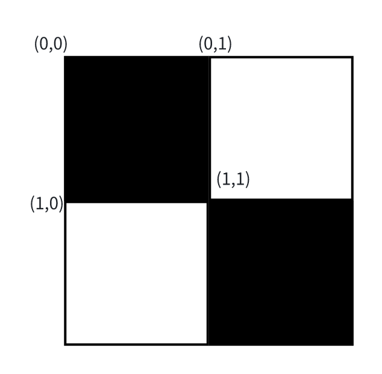
So, what needs to be done is to transform the known UV coordinates and round them down
to the top-left corner. Initially, my sphere texture was not correct, and the specific
situation is discussed in Part 3 above.
**Checkerboard Comparison: Sphere**
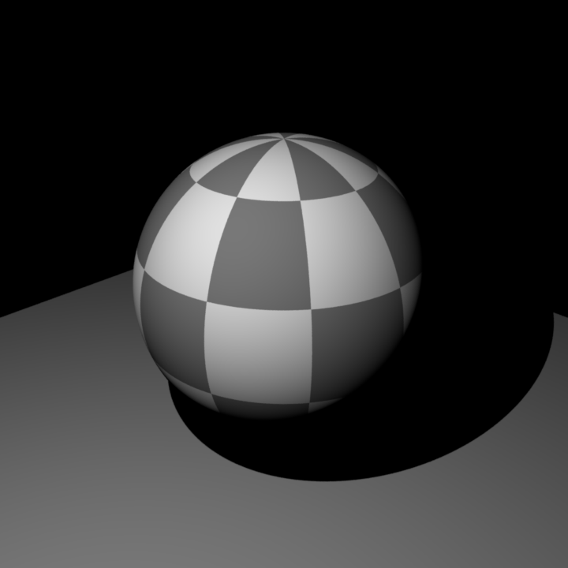
**Checkerboard Comparison: Mesh**
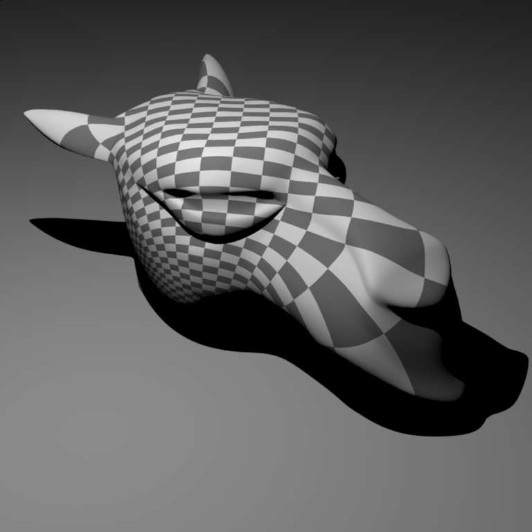
# Feedback
**Use this section to provide feedback about this assignment (each task, the handout, Nori, etc.). We appreciate your opinions to help improve future homeworks and projects.**
For the most part, I find that there are clear guidelines available for the tasks at hand. However, I personally feel that
I may spend more time on Part 4. Part of the challenge is that the content here is somewhat unfamiliar, and perhaps the
knowledge we had at the time when the assignment was released was limited. Additionally, a significant part of challenge
comes from finding and using functions. I would suggest providing more information in the assignment instructions.
The instructions do mention "diffuse BSDF", however, the "diffuse.cpp" file did not provide clear guidance in how to
use it, especially when it comes to the use of BSDF value in "direct.cpp." Personally, I feel that more guidance is
found in "bsdf.h" than in "diffuse.cpp" in this case.
Similarly, some functions which we used are spread across different header files, and some of them could not be searched out
from the documentation pages. If there could be a comprehensive and well-organized table that documents the corresponding
functions which has been implemented by nori and their functionalities, it would significantly speed up my coding process,
especially when I'm not very familiar with Nori's structure and functions.
# Supplementary
* For each task, please note down the time you spent working through it and use at least a few sentences to describe your implementation. If applicable, also report the problems you encounter (e.g. whether or how it's solved, what is the difficult part).
* Please let us know to what extent your code is working (e.g. you only managed to work through part of this assignment, or your solution doesn't operate as expected in some corner cases). We encourage you to share your thinking process, and points will be granted based on your description even if the code is not 100% functioning.
* Nori generates both EXR and PNG format output. Please use PNG for image comparison in the report.
* This report template uses [Markdeep](https://casual-effects.com/markdeep/), which supports Markdown syntax in HTML file. For example usage, please refer to the [official demo document](https://casual-effects.com/markdeep/features.md.html).
* LaTeX is also supported for typing mathematical formulas:
$$
L_o(\mathbf{x}, \omega_o) = \int_{\Omega} L_i(\mathbf{x},\omega_i)\, f(\mathbf{x}, \omega_i, \omega_o)\, |\cos\theta_i|\, \mathrm{d}\omega_i
$$
 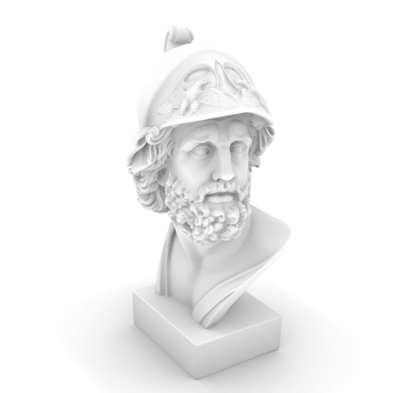
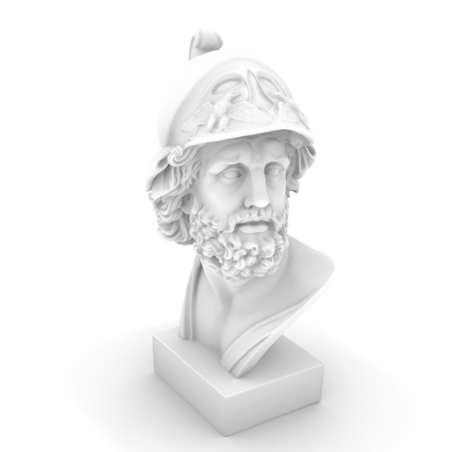
 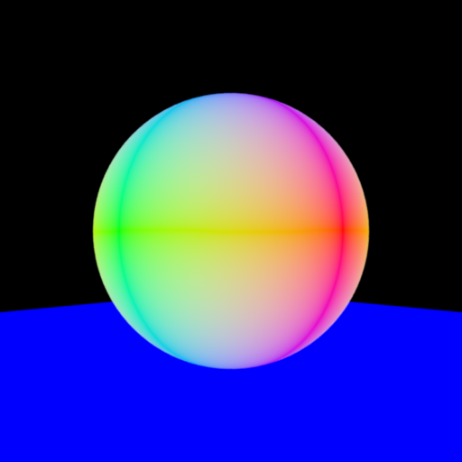
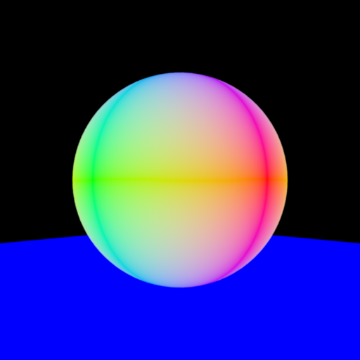
 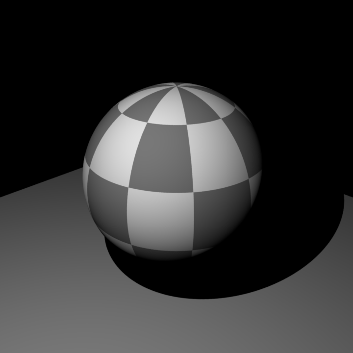
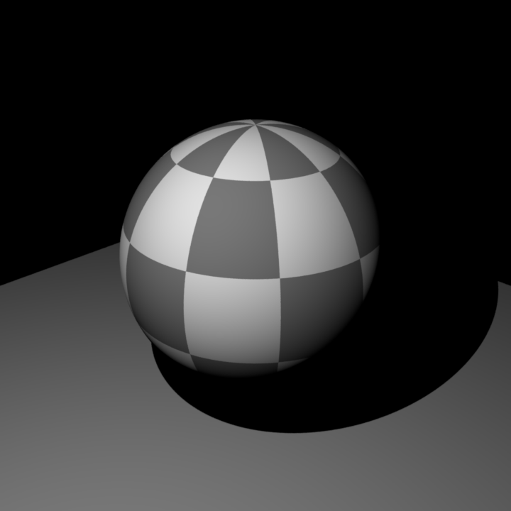